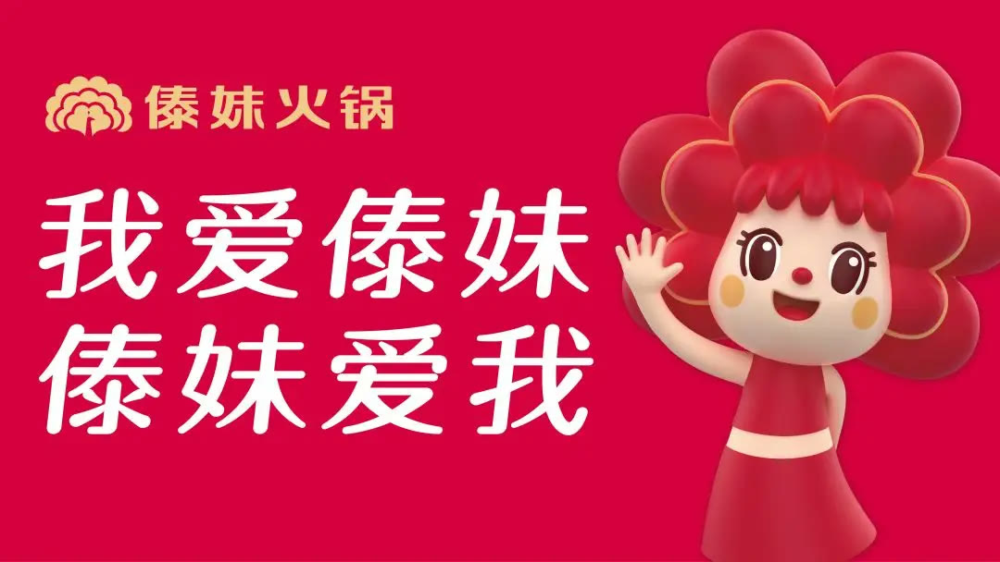
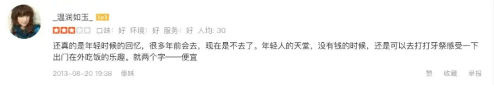
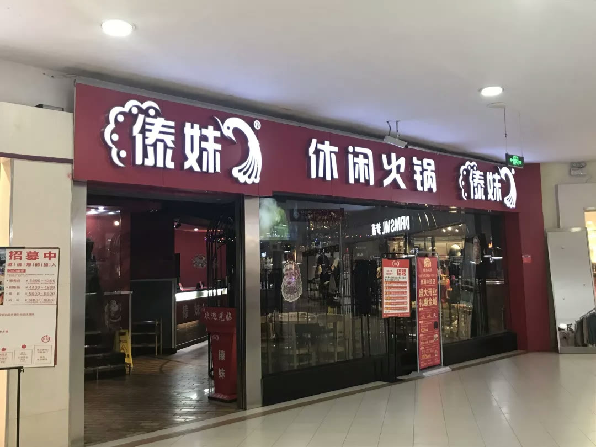
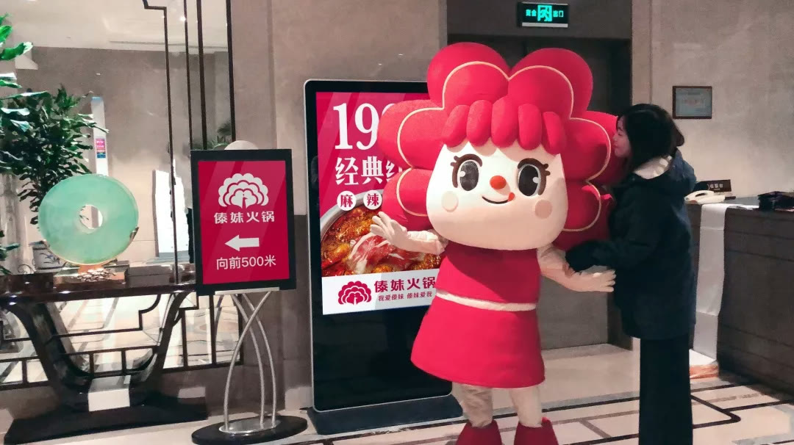
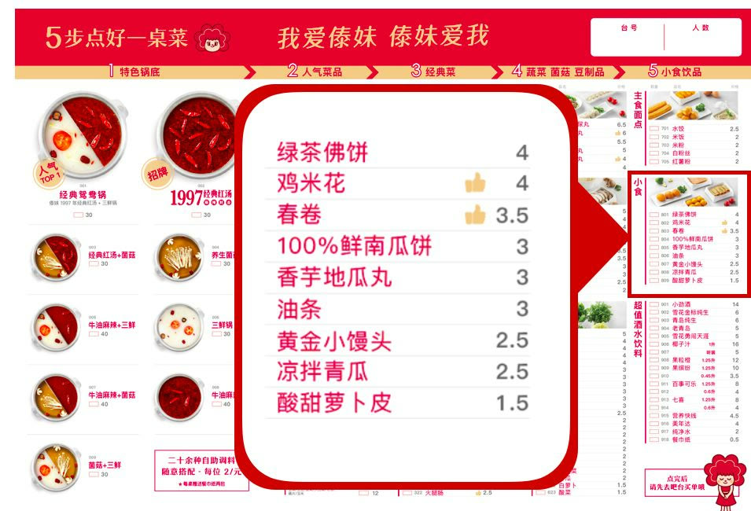

01 · 课题
所谓年轻化，首先是重新定义品牌价值
“村姑变时尚白领”描述的不是换一种装饰风格，而是让傣妹在保持价格优势的同时，获得更清晰、更现代的品牌体验。

02 · 资产
从企业寻宝中找到应该继承的部分
项目梳理名称、色彩、历史识别和消费者记忆，保留能够代表傣妹的资产，再进行强化，避免一次焕新切断既有认知。

03 · 语言
品牌谚语把战略转化为顾客能说的话
一句可理解、可复述的品牌语言，负责说明傣妹的核心优势，并进入门店、菜单和传播，统一不同触点的表达。

04 · 菜单
菜单要帮助顾客快速点好一桌菜
超级菜单以食材证供、点单步骤、推荐产品和价格排序降低决策成本。菜单不再是菜名清单，而是覆盖每桌顾客的销售工具。

05 · 产品
爆品开发从购买理由开始
产品开发先确定顾客为什么点，再把购买理由铺进吊旗、台卡和菜单。产品与传播同步设计，才能形成门店中的热卖氛围。
